Intune Policies for Linux Clients
by Stefan Kania
This part deals with the use of Intune to create policies when deploying Linux clients in an Entra Id environment.
What is Intune?
Intune is comparable to Group Policy Objects (GPOs) in Active Directory. Many GPOs from an existing Active Directory can be exported to Intune. GPOs for Linux clients can also be set up in Intune. However, it is not possible to import Linux GPOs (e.g., from a Samba AD). This is not due to Himmelblau, but rather to Microsoft's restrictions. Linux clients are supported, but not very extensively.
There is another major limitation when setting up policies for Linux clients. In Himmelblau 2.x, Intune policies are applied only to the first user who signs in to the Linux client. Other users can still sign in, but Intune policies are not applied to them.
This means policy enforcement currently makes the most sense on devices that are assigned to a single primary user.
The policies can be managed via the URL https://intune.microsoft.com/. If you have already logged in to the Entra Id portal, the same user will be automatically logged in here.
First, let's take a look at device management in Entra Id. Without further restrictions, any user who has an account in the Entra Id domain can add a machine to the domain.
If a Linux client is to be managed in Intune at a later date, it is essential that the user who adds the client to the domain has the appropriate license. Licenses can be managed at https://admin.cloud.microsoft/. The following figure shows an excerpt from the list of all users, with and without licenses.
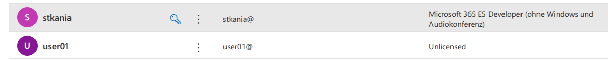
Only when the user adds a client to the domain will the client be recognized as a Linux client in both Entra Id and Intune.
In Intune, all devices that can be managed are displayed in the device overview, sorted by operating system. Linux clients added to the domain by a user without a license are not listed here. Only the device overview of the Entra Id portal displays all devices.
Now policies can be set up and assigned.
Before Linux compliance policies can be enforced on the client, policy
processing must be enabled in /etc/himmelblau/himmelblau.conf. Add the
following setting in the [global] section and restart both Himmelblau
services:
[global]
apply_policy = true
sudo systemctl restart himmelblaud himmelblaud-tasks
First, a policy for passwords should be created and assigned. To avoid having to add each client individually to the policy, a group can be created either in the Entra Id portal or directly in Intune, in which all desired systems are entered as members. In the Intune Admin Center, select the menu item Devices→Linux → Compliance.
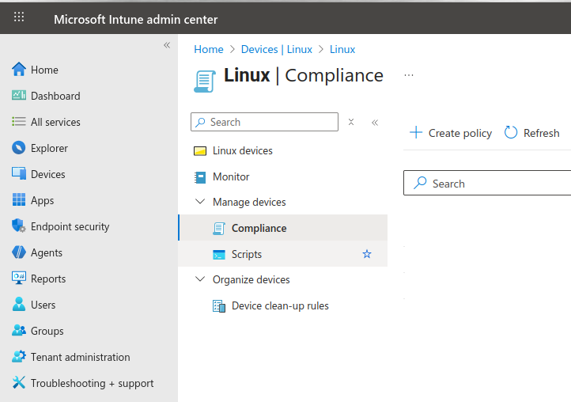
Currently, no policies are listed there. You can then create an initial policy via the Create Policy link.
After clicking on the link, the following selection is displayed on the right-hand side.
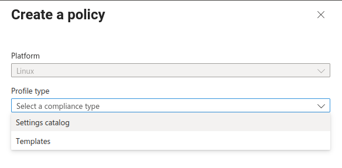
Now select the Settings Catalog option and confirm at the bottom.
In the next window, enter the name for the policy. The description is optional, but always useful and helpful.
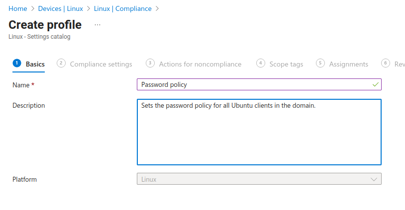
After saving the empty policy, a new page is displayed. Clicking on the Add Settings link then allows you to define the actual settings for the policy.
A selection of policies that can be used for Linux clients now appears on the right-hand side. Clicking on Password Policies then displays all the setting options below.
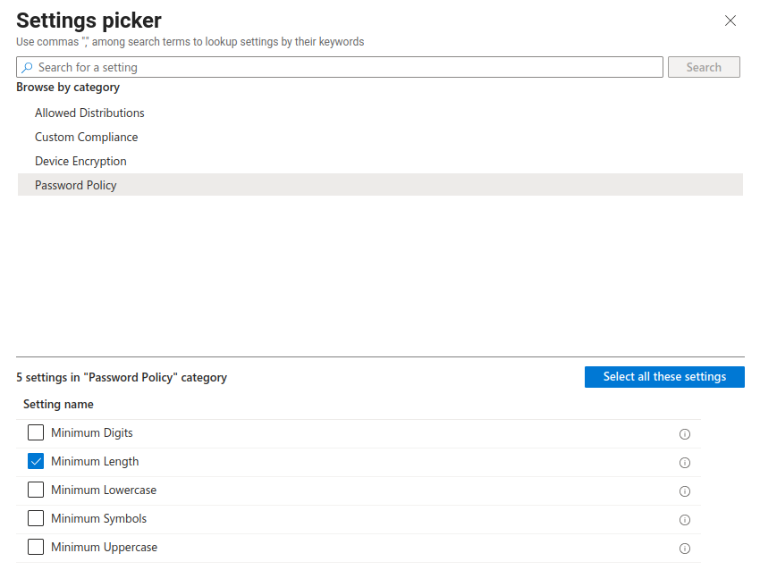
Clicking on one of the options opens a display on the left side where the settings can be made.
Once all the desired settings have been made, the policy can be saved. You then have the option of sending an email to owners of incompatible devices. This option makes sense if the policy is only intended for Linux clients for a specific distribution. The password policy created here should now only apply to Ubuntu clients. For this reason, the policy will be expanded later.
The policy can now be assigned to a group. The assignment is made in the Assignments section of the policy creation. The Scope Tags item remains unchanged.
In the Assignments section, the previously created group with the corresponding Linux clients is now added.
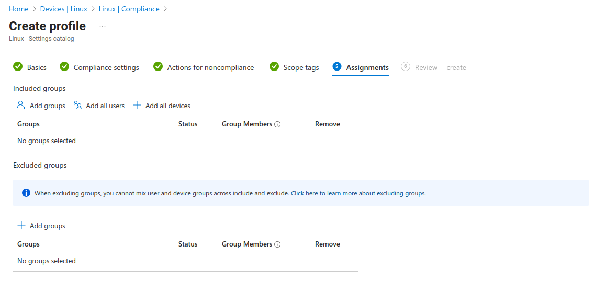
After clicking Next, a summary is displayed. Only now is the policy entered into the system by clicking Create.
To ensure that the policy is only effective for Ubuntu clients, the policy is now extended. To do this, the properties of the policy are called up and an existing policy can be changed there via the link Compliance Settings → Edit.
Now a new setting is to be added, namely a setting of the type Allowed Distributions
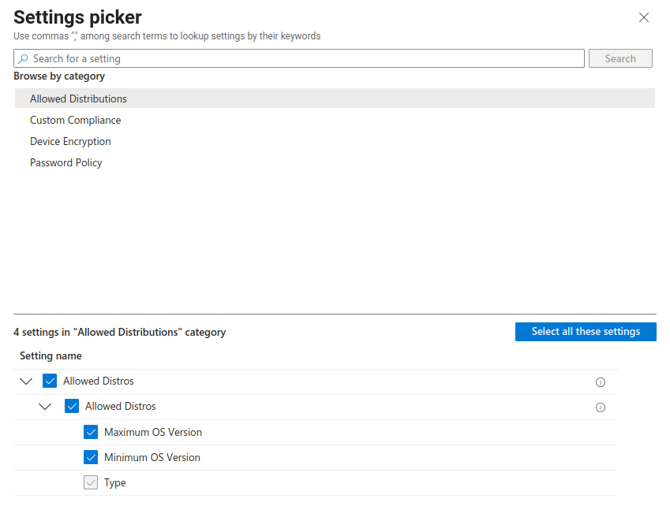
After making your selection, you can configure the settings for the distribution on the left-hand side.
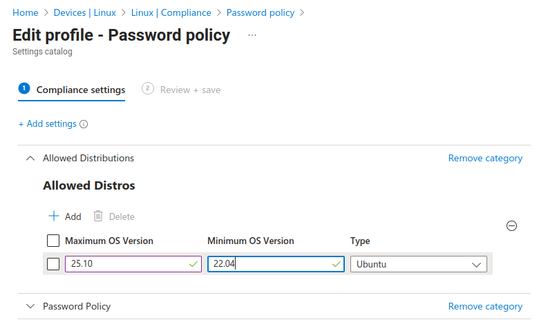
Unfortunately, only Ubuntu and Redhat are currently available for selection. Other distributions are not (yet) supported.
Redhat only supports versions 8 and 9, and Ubuntu only supports desktop versions 22.04 and 24.04.
However, the restriction on Ubuntu versions only applies to the use of the Microsoft client for Linux systems.
Himmelblau can also recognize newer versions and display them as compatible. The use of Ubuntu Server is also not a problem.
Now the settings can be checked again and then saved. Afterwards, a summary of all settings can be displayed again. To do this, go to the menu item Devices → Linux → Manage Devices → Compliance. All policies are displayed at this point. After clicking on the new policy, the properties can be displayed as shown in the following figure.
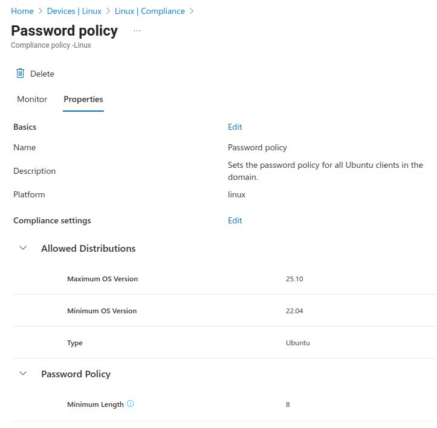
Another option for managing Linux clients is to assign scripts. The corresponding setting can be found under Devices → Linux → Manage Devices → Scripts
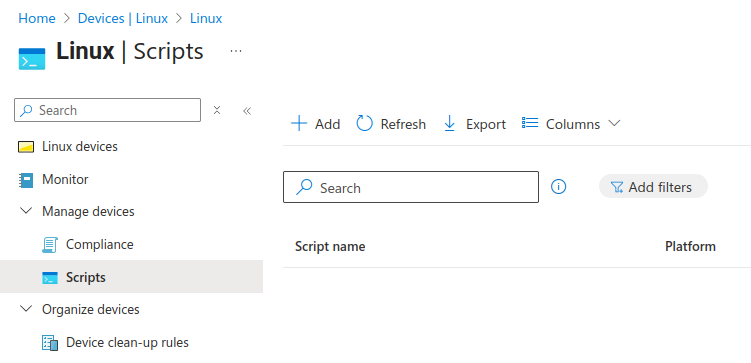
A new script is now added here. The first step is to enter a name and description for the script.
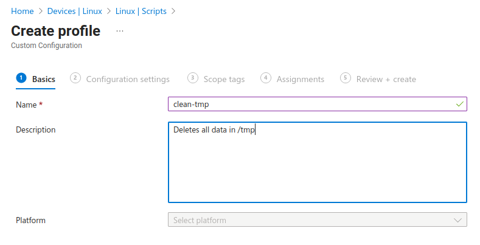
In the next step, the configuration of the script can be adjusted. There are two ways to provide the script: Either the script can be uploaded from the local system, in which case it is important to ensure that the file extension is .sh; other extensions are not permitted and will result in an error message. The other option is to create the script directly in the "Bash script" field. When a script is uploaded, its content also appears in this area and can be customized here. Another important setting here is the execution time of the script. The following image shows the creation of a script.
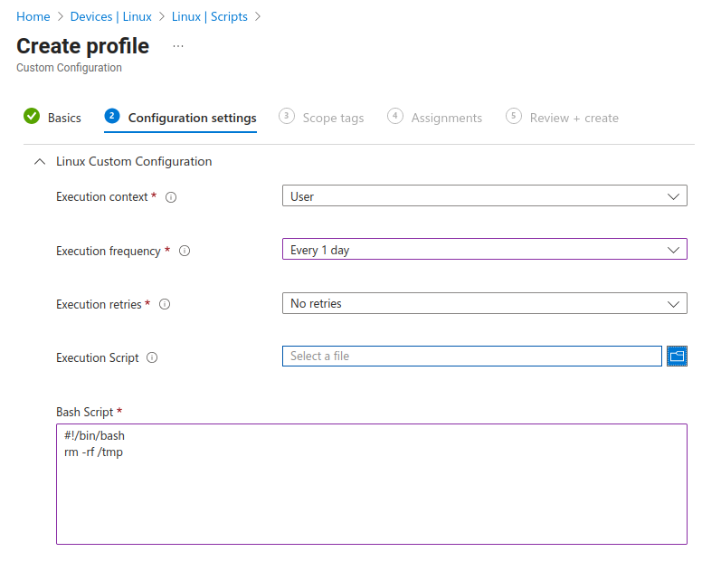
As with the first policy, the next step is to assign the script to the desired groups and users.
To check whether a script has been executed without errors, go to Devices → Linux → Scripts. There you can check the status of the scripts. The following image shows the successful execution of the script.
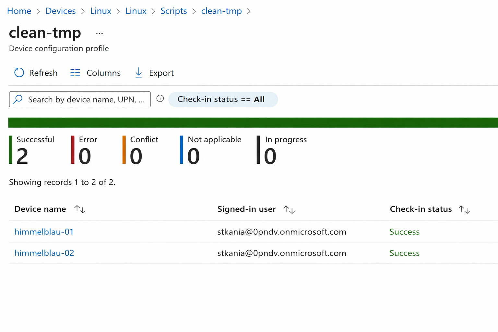
Unfortunately, there is currently no way to check which policies are applied on the Linux client, as is the case with Linux GPOs in Samba Active Directory, for example. At the moment, the only option is to test the settings on the client.
In addition to the policy options described here, the following policies can also be set up for Linux clients.
Checking the encryption of local disks
Especially with notebooks, it may be necessary to ensure that the file system is encrypted. A new policy can be used to check this for specific devices.
The first step is to create a new group that includes all Linux devices for which file system encryption needs to be checked.
Now, a new policy can be created in Intune under Devices→ Linux → Manage devices → Compliance. As in the example for passwords, a policy is selected from the settings catalog. After assigning a name for the policy and a descriptive description, a new policy type can be added by clicking on Add setting.
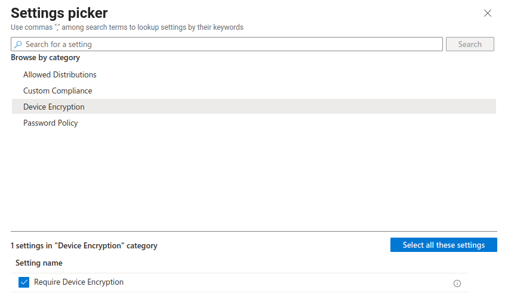
On the left side, the setting Require device encryption is then set to TRUE. The following two items (Actions in case of incompatibility and Scope tags) can be set according to your own specifications, but are not relevant for device verification.
The new policy is then assigned to the group created at the beginning.
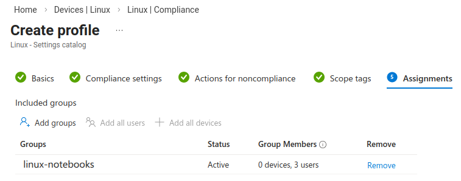
After clicking Continue, the summary of the new policy appears again. You can then complete the creation of the policy. The new policy will then appear in the list of previously created policies.
Removing devices that have not been logged in for a preset period of time
This policy can be used to ensure that devices that have been inactive for a long time are removed from Entra Id management. The device must then be re-added the next time it logs in.
Use of custom scripts for compliance testing
Custom policies for compliance testing are not currently possible.